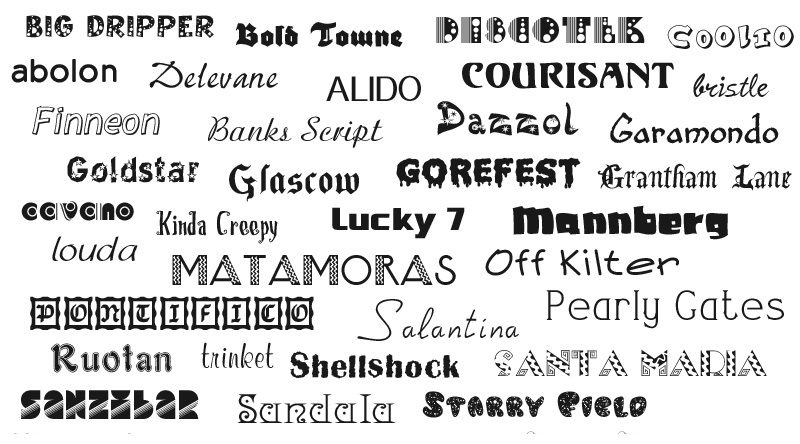

Журнал New Scientist опубликовал краткий обзор исследований о восприятии типографских шрифтов. Поводом для публикации в New Scientist стала реакция части публики на использование шрифта Comic Sans в презентации Фабиолы Джанотти, представлявшей исследовательскую группу ATLAS, которая объявила об обнаружении бозона Хиггса в ходе работы на Большом адронном коллайдере.
У многих вызвало глубокое возмущение несоответствие шрифта и серьезного, значительного события. Среди отзывов есть и такие: «Использовать в данном случае Comic Sans – это всё равно, что прийти на похороны в гавайской рубашке». Склонные к юмору читатели предложили переименовать Comic Sans в Comic Cerns.
Эти истории показывают, что шрифт – нечто большее, чем он кажется на первый взгляд. Шрифт оказывается способным оказывать влияние на читательское восприятие и оценку текста, написанного этим шрифтом. Еще в 1955 году Сирил Бёрт и коллеги в Лондоне определяли, насколько быстро дети читают тексты с различными шрифтами. Как оказалось, даже очень похожие шрифты порой сильно различаются по степени легкости чтения. Так, Bodoni читать труднее, чем Times New Roman.
Менее очевидны результаты другого исследования, определявшего влияние шрифта на запоминание текста. В 2010 году такой эксперимент провела группа исследователей под руководством Дэнни Оппенгеймера в Принстонском университете. Они предлагали участникам запомнить 21 характеристику трех видов фантастических инопланетян. Обнаружилось, что те, кому доставался список, напечатанный более сложным шрифтом, тратили больше времени на чтение, однако запоминали куда больше деталей, чем те, кто читал список, напечатанный шрифтом Times New Roman. Позднее Оппенгеймер обнаружил тот же эффект у школьников, усваивающих учебные материалы.
В 2008 году психологи Хён Чин Сон и Норберт Шварц из Мичиганского университета выяснили, что шрифт может влиять и на оценку читателем собственных возможностей. Они предлагали испытуемым описание физического упражнения, напечатанное популярным шрифтом Arial или более сложным для чтения шрифтом Brush Script. После чтения участников просили оценить ложность упражнения и время, которое займет его выполнение. Те, кому доставался текст с Brush Script давали более высокие оценки сложности и времени. Эти же исследователи провели аналогичный опыт с кулинарным рецептом, отпечатанным шрифтом Arial и шрифтом Mistral, который имитирует рукописный текст. В результате те, кто читал рецепт, написанный шрифтом Mistral, считали, что блюдо будет готовиться дольше и требует более высокого уровня мастерства, чем те, кому достался Arial.
Изучалось и влияние шрифта на явление, которое в когнитивной психологии называют предвзятостью подтверждения (confirmation bias) – склонность искать в новой информации подтверждения уже имеющегося у индивидуума мнения.
Психолог Джесси Ли Престон из Иллинойского университета в Урбане-Шампейне предлагал испытуемым, причислявшим себя к либералам или к консерваторам, текст, содержавший аргументы в пользу смертной казни. Те, кто получал этот текст в более простом шрифте, куда чаще воспринимали эти аргументы лишь как подтверждение собственных воззрений, те же, кто получал сложный для восприятия шрифт, более взвешенно их оценивали и лучше осознавали сложность аргументов.
Во втором эксперименте участники читали документы вымышленного судебного процесса. Оказалось, что, если тексты были в более трудном шрифте, читающие могли более эффективно отсеять содержащуюся в текстах не относящуюся к делу информацию. Престон полагает, что, если текст труднее читать, это стимулирует внимание и мышление читателя.
Восприятие шрифта разной степени легкости изучалось и при помощи функциональной магнитно-резонансной томографии. Этим занималась группа под руководством Станисласа Деана в Коллеж-де-Франс. Они показали, что, когда читать легко, человек пропускает отдельные буквы, угадывая слова при помощи зоны мозга, отвечающей за распознавание образов. Если графический образ более сложный, человек читает букву за буквой, при этом в процесс кора верхне-теменной области, где локализован механизм побуквенного чтения. Эта зона также связана с механизмами внимания и памяти.
На главную